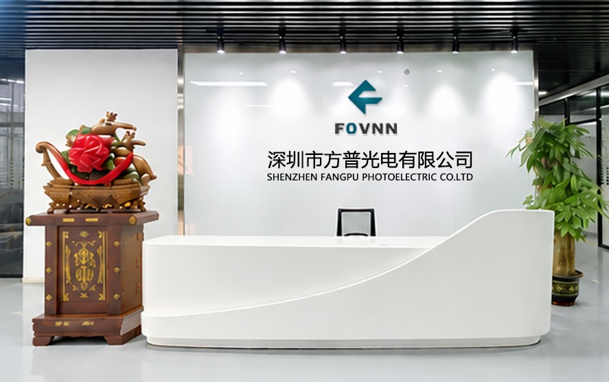
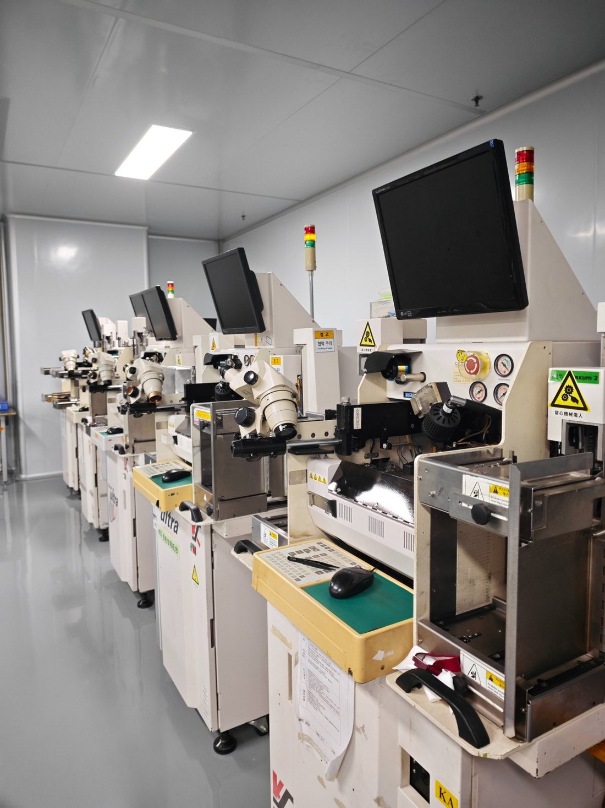
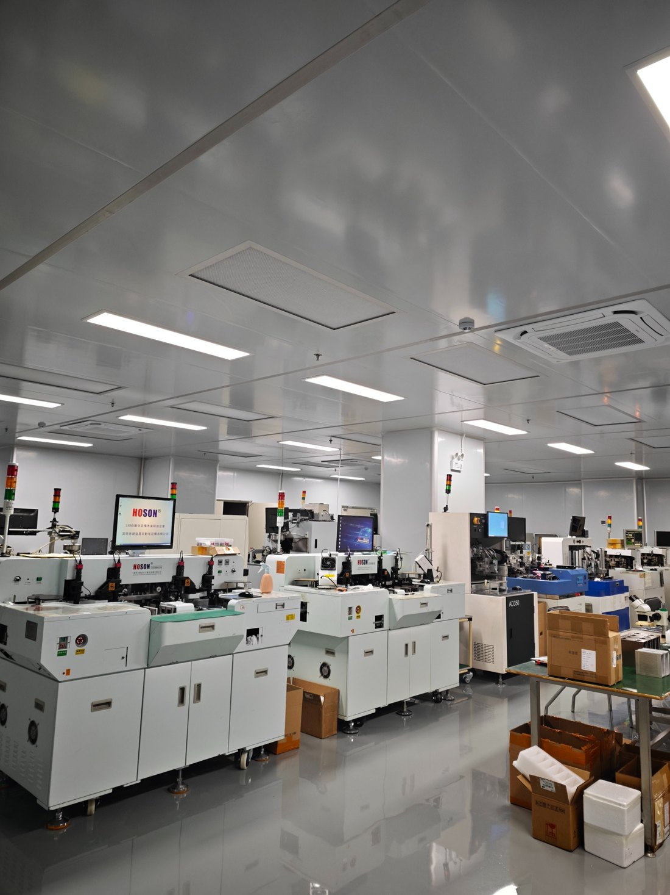
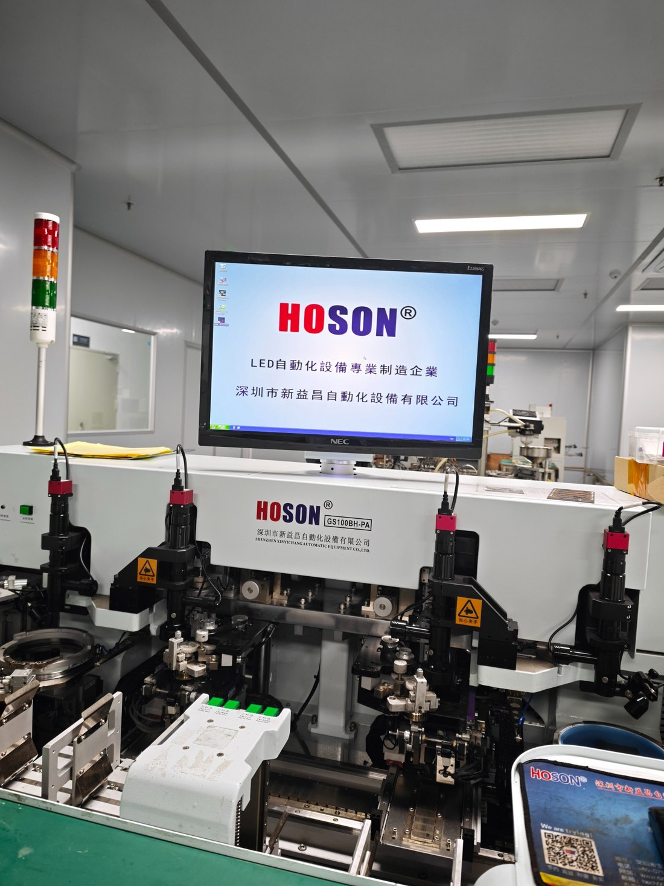
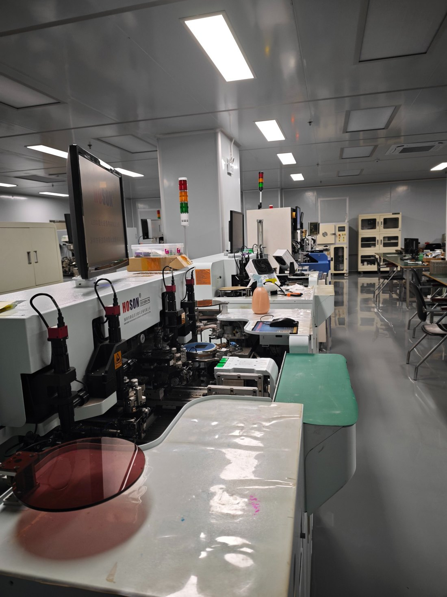

PRODUCT GUIDE / 01
如何根据应用场景选择 UVA LED 波长？
365nm、395nm 与 405nm 常见波段在应用选择中各有侧重，需结合材料响应、光学结构与实际工艺条件评估。
阅读选型指南
深圳市方普光电有限公司是一家集研发、生产与销售于一体的高新技术企业，专注于高功率陶瓷 LED 灯珠器件、UV-LED 产品封装及行业应用方案开发。公司围绕不同波段、封装形式与应用场景，持续完善产品体系，涵盖常规白光、宽谱光、UVA、UVB、UVC、红外及植物照明等领域。我们坚持以技术创新为驱动，注重产品性能与应用需求的匹配，为客户提供专业的产品选型、技术支持及定制化解决方案，让优质光源更好地融入各类设备与应用系统。
走进生产现场，了解设备配置与制造环境。




围绕不同光谱与应用需求，构建多系列 LED 光源产品组合。具体参数以对应型号规格书及实际确认结果为准。
查看全部产品不同应用对波长、光功率、热管理、结构尺寸与使用环境有不同要求。方普围绕具体场景提供产品方向与选型沟通。
波长、功率、色温、封装尺寸、基板结构与散热条件，都会影响光源在具体设备中的表现。提交应用场景与目标参数，我们可以从产品方向开始沟通。
告诉我们你的应用场景、目标波段与规格需求，从产品选型开始沟通。